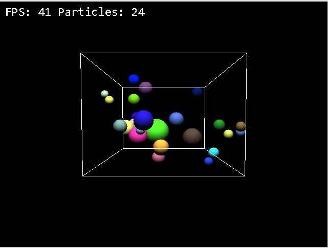

About Me
April 2023 - September 2024
• Worked in an agile development team
• Reviewed and tested code changes with tests written in Java using Serenity BDD or Postman.
• Deployed applications using Kubernetes.
• Worked with testing backend services and NoSQL databases
• Ensured services used on brand sites such as Jeep.com matched business requirements
• Contributed to enhancing backend services for Stellantis brands.
May 2022 - August 2022
• Assisted in the management of student records. Supported the IT department with various tasks.
B.S. Honors Specialization
in
Computer Science with a Minor in Software Engineering
Other Relevant Education: Amazon Web Services Developing on AWS
Crash Recovery is an adventure game written in Java, representing a significant effort in my programming journey. With a robust architecture consisting of over 40 Java classes, this project served as a pivotal learning experience, allowing me to tackle the complexities of a larger-scale program. Throughout its development, I encountered numerous challenges and lessons, enriching my understanding of software design and implementation.

In Crash Recovery, players embark on a journey through various levels, tasked with defending their character against formidable enemies. The goal? To gather essential ship parts scattered across the terrain, crucial for repairing the protagonist's vessel following a crash landing. This adventure not only showcased my technical skills but also fostered creativity and problem-solving abilities, shaping me into a more proficient developer.
Barrie Clean is a website made for a mock car detailing company. It was developed to practice full stack development. The website was originally built using Vue, Node.js and MYSQL. Then changed to utilize firebase. The website allows users to book appointments, view services, contact the company, and extra controls for the admin such as viewing all appointments and deleting them. Check out the website here.
Changing to firebase allowed for more features such as user authentication, and the ability to store data in the cloud. This project was a great learning experience for me as it allowed me to learn how to use firebase and how to change a project from using a SQL database to using firebase.
In collaboration with Western’s Department of Physics and Astronomy, we enhanced the capabilities of the existing telescope array. By integrating satellite data from the N2YO API into the telescope’s control software, we enabled the observatory to perform its first targeted satellite observations.

A short video showing satellite ARTEMIS passing downward, slightly left of center in the frame.
Particle simulator is a project witten in C that simulates bouncing spheres in a cube. The project was developed to gain a better understanding of 3D graphics and physics. The project uses the SDL library to render to the screen. Using wasd keys the user can move the camera around the cube and using the arrow keys the user can change the angle of the camera. The user can also change the number of particles in the cube and the size of the particles. The user click on particles to observe some stats about it. Using SDL provided a lower level of control over rending which allowed me to learn more about the process of rendering a 3D scene on a 2D screen.
A simple topdown tennis game made in a week for a game jam. Users can play locally against a basic computer or another computer on the same network. The game was made using pygame and socket programming.
HomeHive is a collaborative project developed as part of the coursework for Western University's Object-Oriented Design and Analysis course. Built using C++ and incorporating GTK, the Unsplash API, and libcurl. HomeHive offers a variety of functionalities including weather updates, news feeds, alarms, and dynamic background image switching.


Our sales pitch of the product. The HomeHive is a revolutionary smart-home assistant device and is designed to improve your productivity. Built using the Raspberry Pi, its internet connectivity allows you to integrate into your calendar to give you reminders of upcoming events. Its proprietary and groundbreaking smarthome alarm clock technology allows you to set timers & alarms, automatically playing the latest news, tell you the weather or play your favourite tunes whenever you wake up.